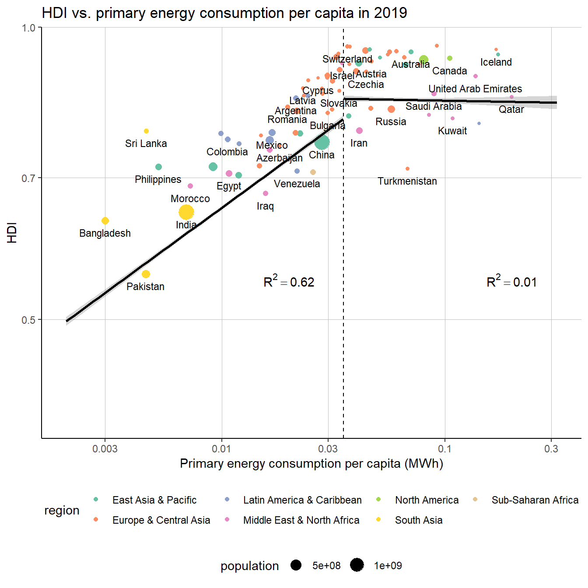

Chapter 4 Missing values
In this chapter, we analyze the missing data in our four primary data sets on energy consumption, GDP, life expectancy, years of schooling, and life expectancy.
4.1 Energy consumption

We can see that about 40% of rows are missing almost all variables. This might become a problem when comparing countries over time as this might suggest that some countries have only little data for a limited number of years. However, about 35% of rows are complete, in that the energy mix can be fully analyzed. The remaining 30% of rows also miss a high share of variables with some exception for oil, biofuel, and primary energy consumption. The reasons for this will need to be examined.
Now, we calculate the share of all missing data to the overall dataset to get a sense of the magnitude.
## 47.5% of cell values is missingWith such a high value, we know that we will need to reduce our analysis to some subset of rows to make many meaningful analyses. Second, we calculate the missing data on a column basis.

We look at the same visualization on a by-region basis. To identify a country’s region, we merge the energy data set with the worldbank data set on countries.

On a region-basis, we can see that Sub-Saharan Africa and Latin America have the most missing data, while Europe & central Asia, as well as North America have the least missing values. For all regions, data availability remains largely constant over time with a high spike in 2020. This is likely due to recency and that some data is not finally collected yet. We also see that because of the merge some countries were not matched with a region in the last graph “NA”. Looking at these countries individually, we will be able to match them with the fitting region.
Now we look at the missing data on a by-country basis.

Looking at the missing data by country, it becomes clear that many countries missing specific variables over the entire time frame. The data availability is also constant inside the previously looked at regions. While the data availability in European and North American countries is largely consistent, the countries in East Asia & Pacific and Latin America vary widely. Some of them are among the best in terms of data availability while others are among the worst. We predict a strong correlation with GDP which will be test later.
4.2 GDP per capita

4.3 Life expectancy

4.4 Years of schooling